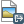
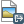
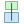
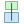

Print Composer
With the Print Composer you can create nice maps and atlasses that can be printed or saved as PDF-file, an image or an SVG-file. This is a powerfull way to share geographical information produced with KADAS that can be included in reports or published.
The Print Composer provides growing layout and printing capabilities. It allows you to add elements such as the KADAS map canvas, text labels, images, legends, scale bars, basic shapes, arrows, attribute tables and HTML frames. You can size, group, align, position and rotate each element and adjust the properties to create your layout. The layout can be printed or exported to image formats, PostScript, PDF or to SVG (export to SVG is not working properly with some recent Qt4 versions; you should try and check individually on your system). You can save the layout as a template and load it again in another session. Finally, generating several maps based on a template can be done through the atlas generator. See a list of tools in table_composer_1:
Icon Purpose Icon Purpose
 Save Project
Save Project
 New Composer
Duplicate Composer
New Composer
Duplicate Composer
 Composer Manager
Composer Manager
 Load from template
Load from template
 Save as template
Save as template
 Print or export as PostScript

Export to an image format
Print or export as PostScript

Export to an image format
 Export print composition to SVG
Export print composition to SVG
 Export as PDF
Export as PDF
 Revert last change
Revert last change
 Restore last change
Restore last change
 Zoom to full extent
Zoom to full extent
 Zoom to 100%
Zoom to 100%
 Zoom in
Zoom out
Zoom in
Zoom out
 Refresh View
Refresh View
{kind=link}
{kind=link}
 Pan
Pan
 Zoom to specific region
Zoom to specific region
 Select/Move item in print composition
Select/Move item in print composition
 Move content within an item
Move content within an item
 Add new map from KADAS map canvas
Add new map from KADAS map canvas
 Add image to print composition
Add image to print composition
 Add label to print composition
Add label to print composition
 Add new legend to print composition
Add new legend to print composition
 Add scale bar to print composition
Add scale bar to print composition
 Add basic shape to print composition
Add basic shape to print composition
 Add arrow to print composition
Add arrow to print composition
 Add attribute table to print composition
Add attribute table to print composition
 Add an HTML frame
Add an HTML frame
 Group items of print composition
Group items of print composition
 Ungroup items of print composition
Ungroup items of print composition
 Lock Selected Items
Lock Selected Items
 Unlock All items
Unlock All items
 Raise selected items
Raise selected items
 Lower selected items
Lower selected items
 Move selected items to top
Move selected items to top
 Move selected items to bottom
Move selected items to bottom
 Align selected items left
Align selected items left
 Align selected items right

Align selected items center
Align selected items right

Align selected items center
 Align selected items center vertical
Align selected items center vertical
 Align selected items top
Align selected items top
 Align selected items bottom
Align selected items bottom
 Preview Atlas
Preview Atlas
 First Feature
First Feature
 Previous Feature
Previous Feature
 Next Feature
Next Feature
 Last feature
Print Atlas
Export Atlas as Image
Last feature
Print Atlas
Export Atlas as Image
 Atlas Settings
Table Composer 1: Print Composer Tools
Atlas Settings
Table Composer 1: Print Composer Tools
{kind=link}
All Print Composer tools are available in menus and as icons in a toolbar. The toolbar can be switched off and on using the right mouse button over the toolbar.
Overview of the Print Composer
Opening the Print Composer provides you with a blank canvas that represents the paper surface when using the print option. Initially you find buttons on the left beside the canvas to add map composer items; the current KADAS map canvas, text labels, images, legends, scale bars, basic shapes, arrows, attribute tables and HTML frames. In this toolbar you also find toolbar buttons to navigate, zoom in on an area and pan the view on the composer and toolbar buttons to select a map composer item and to move the contents of the map item.
Figure_composer_overview shows the initial view of the Print Composer before any elements are added.
Figure Composer Overview:
 Print Composer
Print Composer
On the right beside the canvas you find two panels. The upper panel holds the tabs Items and Command History and the lower panel holds the tabs Composition, Item properties and Atlas generation.
- The Items tab provides a list of all map composer items added to the canvas.
- The Command history tab displays a history of all changes applied to the Print Composer layout. With a mouse click, it is possible to undo and redo layout steps back and forth to a certain status.
- The Composition tab allows you to set paper size, orientation, the page background, number of pages and print quality for the output file in dpi. Furthermore, you can also activate the
 Print as raster checkbox. This means all items will be converted to raster before printing or saving as PostScript or PDF. In this tab, you can also customize settings for grid and smart guides.
Print as raster checkbox. This means all items will be converted to raster before printing or saving as PostScript or PDF. In this tab, you can also customize settings for grid and smart guides. - The Item Properties tab displays the properties for the selected item. Click the Select/Move\ item icon to select an item (e.g., legend, scale bar or label) on the canvas. Then click the Item Properties tab and customize the settings for the selected item.
- The Atlas generation tab allows you to enable the generation of an atlas for the current Composer and gives access to its parameters.
- Finally, you can save your print composition with the Save\ Project button.
In the bottom part of the Print Composer window, you can find a status bar with mouse position, current page number and a combo box to set the zoom level.
You can add multiple elements to the Composer. It is also possible to have more than one map view or legend or scale bar in the Print Composer canvas, on one or several pages. Each element has its own properties and, in the case of the map, its own extent. If you want to remove any elements from the Composer canvas you can do that with the Delete or the Backspace key.
Navigation tools
To navigate in the canvas layout, the Print Composer provides some general tools:
- Zoom\ in
 Zoom\ out
Zoom\ out- Zoom\ full
- Zoom\ to\ 100%
- Refresh\ view (if you find the view in an inconsistent state)
- Pan\ composer
- Zoom (zoom to a specific region of the Composer)
You can change the zoom level also using the mouse wheel or the combo box in the status bar. If you need to switch to pan mode while working in the Composer area, you can hold the Spacebar or the the mouse wheel. With Ctrl+Spacebar, you can temporarily switch to zoom mode, and with Ctrl+Shift+Spacebar, to zoom out mode.
Sample Session
To demonstrate how to create a map please follow the next instructions.
- On the left site, select the Add\ new\ map toolbar button and draw a rectangle on the canvas holding down the left mouse button. Inside the drawn rectangle the KADAS map view to the canvas.
- Select the Add\ new\ scalebar toolbar button and place the map item with the left mouse button on the Print Composer canvas. A scalebar will be added to the canvas.
- Select the Add\ new\ legend toolbar button and draw a rectangle on the canvas holding down the left mouse button. Inside the drawn rectangle the legend will be drawn.
- Select the Select/Move\ item icon to select the map on the canvas and move it a bit.
- While the map item is still selected you can also change the size of the map item. Click while holding down the left mouse button, in a white little rectangle in one of the corners of the map item and drag it to a new location to change it’s size.
- Click the Item Properties tab on the left lower panel and find the setting for the orientation. Change the value of the setting Map orientation to ‘15.00° ‘. You should see the orientation of the map item change.
- Finally, you can save your print composition with the Save\ Project button.
Print Composer Options
From Settings ‣ Composer Options you can set some options that will be used as default during your work.
- Compositions defaults let you specify the default font to use.
- With Grid appearance, you can set the grid style and its color. There are three types of grid: Dots, Solid lines and Crosses.
- Grid and guide defaults defines spacing, offset and tolerance of the grid.
Composition tab — General composition setup
In the Composition tab, you can define the global settings of your composition.
- You can choose one of the Presets for your paper sheet, or enter your custom width and height.
- Composition can now be divided into several pages. For instance, a first page can show a map canvas, and a second page can show the attribute table associated with a layer, while a third one shows an HTML frame linking to your organization website. Set the Number of pages to the desired value. You can choose the page Orientation and its Exported resolution. When checked, print as raster means all elements will be rasterized before printing or saving as PostScript or PDF.
- Grid and guides lets you customize grid settings like spacings, offsets and tolerance to your need. The tolerance is the maximum distance below which an item is snapped to smart guides.
Snap to grid and/or to smart guides can be enabled from the View menu. In this menu, you can also hide or show the grid and smart guides.
Composer items common options
Composer items have a set of common properties you will find on the bottom of the Item Properties tab: Position and size, Rotation, Frame, Background, Item ID and Rendering (See figure_composer_common_1).
Figure Composer Common 1:
 Common Item properties Dialogs
Common Item properties Dialogs
- The Position and size dialog lets you define size and position of the frame that contains the item. You can also choose which Reference point will be set at the X and Y coordinates previously defined.
- The Rotation sets the rotation of the element (in degrees).
- The Frame shows or hides the frame around the label. Use the Frame color and Thickness menus to adjust those properties.
- Use the Background color menu for setting a background color. With the dialog you can pick a color (see Color Picker ).
- Use the Item ID to create a relationship to other Print Composer items. This is used with KADAS server and any potential web client. You can set an ID on an item (e.g., a map and a label), and then the web client can send data to set a property (e.g., label text) for that specific item. The GetProjectSettings command will list what items and which IDs are available in a layout.
- Rendering mode can be selected in the option field. See Rendering_Mode.
Note
- The
 Data\ defined\ override icon next to a field means that you can associate the field with data in the map item or use expressions. These are particularly helpful with atlas generation (See atlas_data_defined_overrides).
Data\ defined\ override icon next to a field means that you can associate the field with data in the map item or use expressions. These are particularly helpful with atlas generation (See atlas_data_defined_overrides).
KADAS now allows advanced rendering for Composer items just like vector and raster layers.
Figure Composer common 2:
 Rendering mode
Rendering mode
Transparency
 : You can make the underlying item in the Composer visible with this tool. Use the slider to adapt the visibility of your item to your needs. You can also make a precise definition of the percentage of visibility in the menu beside the slider.
: You can make the underlying item in the Composer visible with this tool. Use the slider to adapt the visibility of your item to your needs. You can also make a precise definition of the percentage of visibility in the menu beside the slider.- Exclude item from exports: You can decide to make an item not visible in all exports. After activating this checkbox, the item will not be included in PDF’s, prints etc..
Blending mode: You can achieve special rendering effects with these tools that you previously only may know from graphics programs. The pixels of your overlaying and underlaying items are mixed through the settings described below.
- Normal: This is the standard blend mode, which uses the alpha channel of the top pixel to blend with the pixel beneath it; the colors aren’t mixed.
- Lighten: This selects the maximum of each component from the foreground and background pixels. Be aware that the results tend to be jagged and harsh.
- Screen: Light pixels from the source are painted over the destination, while dark pixels are not. This mode is most useful for mixing the texture of one layer with another layer (e.g., you can use a hillshade to texture another layer).
- Dodge: Dodge will brighten and saturate underlying pixels based on the lightness of the top pixel. So, brighter top pixels cause the saturation and brightness of the underlying pixels to increase. This works best if the top pixels aren’t too bright; otherwise the effect is too extreme.
- Addition: This blend mode simply adds pixel values of one layer with pixel values of the other. In case of values above 1 (as in the case of RGB), white is displayed. This mode is suitable for highlighting features.
- Darken: This creates a resultant pixel that retains the smallest components of the foreground and background pixels. Like lighten, the results tend to be jagged and harsh.
- Multiply: Here, the numbers for each pixel of the top layer are multiplied with the numbers for the corresponding pixel of the bottom layer. The results are darker pictures.
- Burn: Darker colors in the top layer cause the underlying layers to darken. Burn can be used to tweak and colorise underlying layers.
- Overlay: This mode combines the multiply and screen blending modes. In the resulting picture, light parts become lighter and dark parts become darker.
- Soft light: This is very similar to overlay, but instead of using multiply/screen it uses color burn/dodge. This mode is supposed to emulate shining a soft light onto an image.
- Hard light: Hard light is very similar to the overlay mode. It’s supposed to emulate projecting a very intense light onto an image.
- Difference: Difference subtracts the top pixel from the bottom pixel, or the other way around, to always get a positive value. Blending with black produces no change, as the difference with all colors is zero.
- Subtract: This blend mode simply subtracts pixel values of one layer with pixel values of the other. In case of negative values, black is displayed.
The Map item
Click on the Add\ new\ map toolbar button in the Print Composer toolbar to add the KADAS map canvas. Now, drag a rectangle onto the Composer canvas with the left mouse button to add the map. To display the current map, you can choose between three different modes in the map Item Properties tab:
- Rectangle is the default setting. It only displays an empty box with a message ‘Map will be printed here’.
- Cache renders the map in the current screen resolution. If you zoom the Composer window in or out, the map is not rendered again but the image will be scaled.
- Render means that if you zoom the Composer window in or out, the map will be rendered again, but for space reasons, only up to a maximum resolution.
Cache is the default preview mode for newly added Print Composer maps.
You can resize the map element by clicking on the Select/Move\ item button, selecting the element, and dragging one of the blue handles in the corner of the map. With the map selected, you can now adapt more properties in the map Item Properties tab.
To move layers within the map element, select the map element, click the Move\ item\ content icon and move the layers within the map item frame with the left mouse button. After you have found the right place for an item, you can lock the item position within the Print Composer canvas. Select the map item and use the toolbar Lock\ Selected\ Items or the Items tab to Lock the item. A locked item can only be selected using the Items tab. Once selected you can use the Items tab to unlock individual items. The Unlock\ All\ Items icon will unlock all locked composer items.
Main properties
The Main properties dialog of the map Item Properties tab provides the following functionalities (see figure_composer_map_1):
Figure Composer Map 1:
 Map Item properties Tab
Map Item properties Tab
- The Preview area allows you to define the preview modes ‘Rectangle’, ‘Cache’ and ‘Render’, as described above. If you change the view on the KADAS map canvas by changing vector or raster properties, you can update the Print Composer view by selecting the map element in the Print Composer and clicking the [Update preview] button.
- The field Scale
 sets a manual scale.
sets a manual scale. - The field Map rotation allows you to rotate the map element content clockwise in degrees. The rotation of the map view can be imitated here. Note that a correct coordinate frame can only be added with the default value 0 and that once you defined a Map rotation it currently cannot be changed.
- Draw map canvas items lets you show annotations that may be placed on the map canvas in the main KADAS window.
- You can choose to lock the layers shown on a map item. Check Lock layers for map item. After this is checked, any layer that would be displayed or hidden in the main KADAS window will not appear or be hidden in the map item of the Composer. But style and labels of a locked layer are still refreshed according to the main KADAS interface. You can prevent this by using Lock layer styles for map item.
- The
 button allows you to add quickly all the presets views you have prepared in QGIS. Clicking on the button you will see the list of all the preset views: just select the preset you want to display. The map canvas will automatically lock the preset layers by enabling the Lock layers for map item: if you want to unselect the preset, just uncheck the and press on the button. See Map Legend to find out how to create presets views.
button allows you to add quickly all the presets views you have prepared in QGIS. Clicking on the button you will see the list of all the preset views: just select the preset you want to display. The map canvas will automatically lock the preset layers by enabling the Lock layers for map item: if you want to unselect the preset, just uncheck the and press on the button. See Map Legend to find out how to create presets views.
Extents
The Extents dialog of the map item tab provides the following functionalities (see figure_composer_map_2):
Figure Composer Map 2:
 Map Extents Dialog
Map Extents Dialog
- The Map extents area allows you to specify the map extent using X and Y min/max values and by clicking the [Set to map canvas extent] button. This button sets the map extent of the composer map item to the extent of the current map view in the main KADAS application. The button [View extent in map canvas] does exactly the opposite, it updates the extent of the map view in the QGIS application to the extent of the composer map item.
If you change the view on the KADAS map canvas by changing vector or raster properties, you can update the Print Composer view by selecting the map element in the Print Composer and clicking the [Update preview] button in the map Item Properties tab (see figure_composer_map_1).
Grids
The Grids dialog of the map Item Properties tab provides the possibility to add several grids to a map item.
- With the plus and minus button you can add or remove a selected grid.
- With the up and down button you can move a grid in the list and set the drawing priority.
When you double click on the added grid you can give it another name.
Figure Composer Map 3:
 Map Grids Dialog
Map Grids Dialog
After you have added a grid, you can activate the checkbox Show grid to overlay a grid onto the map element. Expand this option to provide a lot of configuration options, see Figure_composer_map_4.
Figure Composer Map 4:
 Draw Grid Dialog
Draw Grid Dialog
As grid type, you can specify to use a ‘Solid’, ‘Cross’, ‘Markers’ or ‘Frame and annotations only’. ‘Frame and annotations only’ is especially useful when working with rotated maps or reprojected grids. In the devisions section of the Grid Frame Dialog mentioned below you then have a corresponding setting. Symbology of the grid can be chosen. See section Rendering_Mode. Furthermore, you can define an interval in the X and Y directions, an X and Y offset, and the width used for the cross or line grid type.
Figure Composer Map 5:
 Grid Frame Dialog
Grid Frame Dialog
- There are different options to style the frame that holds the map. Following options are available: No Frame, Zebra, Interior ticks, Exterior ticks, Interior and Exterior ticks and Lineborder.
- With ‘LatitudeY/ only’ and ‘Longitude/X only’ setting in the devisions section you have the possibility to prevent a mix of latitude/y and longitude/x coordinates showing on a side when working with rotated maps or reprojected grids.
- Advanced rendering mode is also available for grids (see section Rendering_mode).
- The Draw coordinates checkbox allows you to add coordinates to the map frame. You can choose the annotation numeric format, the options range from decimal to degrees, minute and seconds, with or without suffix, and aligned or not. You can choose which annotation to show. The options are: show all, latitude only, longitude only, or disable(none). This is useful when the map is rotated. The annotation can be drawn inside or outside the map frame. The annotation direction can be defined as horizontal, vertical ascending or vertical descending. In case of map rotation you can Finally, you can define the annotation font, the annotation font color, the annotation distance from the map frame and the precision of the drawn coordinates.
Figure Composer map 6:
 Grid Draw Coordinates dialog
Grid Draw Coordinates dialog
Overviews
The Overviews dialog of the map Item Properties tab provides the following functionalities:
Figure Composer Map 7:
 Map Overviews Dialog
Map Overviews Dialog
You can choose to create an overview map, which shows the extents of the other map(s) that are available in the composer. First you need to create the map(s) you want to include in the overview map. Next you create the map you want to use as the overview map, just like a normal map.
- With the plus and minus button you can add or remove an overview.
- With the up and down button you can move an overview in the list and set the drawing priority.
Open Overviews and press the green plus icon-button to add an overview. Initially this overview is named ‘Overview 1’ (see Figure_composer_map_7). You can change the name when you double-click on the overview item in the list named ‘Overview 1’ and change it to another name.
When you select the overview item in the list you can customize it.
- The Draw “<name_overview>” overview needs to be activated to draw the extent of selected map frame.
- The Map frame combo list can be used to select the map item whose extents will be drawn on the present map item.
- The Frame Style allows you to change the style of the overview frame.
- The Blending mode allows you to set different transparency blend modes. See Rendering_Mode.
- The Invert overview creates a mask around the extents when activated: the referenced map extents are shown clearly, whereas everything else is blended with the frame color.
- The Center on overview puts the extent of the overview frame in the center of the overview map. You can only activate one overview item to center, when you have added several overviews.
The Label item
To add a label, click the Add\ label icon, place the element with the left mouse button on the Print Composer canvas and position and customize its appearance in the label Item Properties tab.
The Item Properties tab of a label item provides the following functionality for the label item (see Figure_composer_label):
Figure Composer 8:
 Label Item properties Tab
Label Item properties Tab
Main properties
- The main properties dialog is where the text (HTML or not) or the expression needed to fill the label is added to the Composer canvas.
- Labels can be interpreted as HTML code: check Render as HTML. You can now insert a URL, a clickable image that links to a web page or something more complex.
- You can also insert an expression. Click on [Insert an expression] to open a new dialog. Build an expression by clicking the functions available in the left side of the panel. Two special categories can be useful, particularly associated with the atlas functionality: geometry functions and records functions. At the bottom, a preview of the expression is shown.
Appearance
- Define Font by clicking on the [Font...] button or a Font color selecting a color using the color selection tool.
- You can specify different horizontal and vertical margins in mm. This is the margin from the edge of the composer item. The label can be positioned outside the bounds of the label e.g. to align label items with other items. In this case you have to use negative values for the margin.
- Using the Alignment is another way to position your label. Note that when e.g. using the Horizontal alignment in
 Center Position the Horizontal margin feature is disabled.
Center Position the Horizontal margin feature is disabled.
The Image item
To add an image, click the Add\ image icon, place the element with the left mouse button on the Print Composer canvas and position and customize its appearance in the image Item Properties tab.
The picture Item Properties tab provides the following functionalities (see figure_composer_image_1):
Figure Composer image 1:
 Image Item properties Tab
Image Item properties Tab
You first have to select the image you want to display. There are several ways to set the image source in the Main properties area.
- Use the browse button
 of image source to select a file on your computer using the browse dialog. The browser will start in the SVG-libraries provided with KADAS. Besides
of image source to select a file on your computer using the browse dialog. The browser will start in the SVG-libraries provided with KADAS. Besides SVG, you can also select other image formats like.pngor.jpg. - You can enter the source directly in the image source text field. You can even provide a remote URL-address to an image.
- From the Search directories area you can also select an image from loading previews ... to set the image source.
- Use the data defined button to set the image source from a record or using a regular expression.
With the Resize mode option, you can set how the image is displayed when the frame is changed, or choose to resize the frame of the image item so it matches the original size of the image.
You can select one of the following modes:
- Zoom: Enlarges the image to the frame while maintaining aspect ratio of picture.
- Stretch: Stretches image to fit inside the frame, ignores aspect ratio.
- Clip: Use this mode for raster images only, it sets the size of the image to original image size without scaling and the frame is used to clip the image, so only the part of the image inside the frame is visible.
- Zoom and resize frame: Enlarges image to fit frame, then resizes frame to fit resultant image.
- Resize frame to image size: Sets size of frame to match original size of image without scaling.
Selected resize mode can disable the item options ‘Placement’ and ‘Image rotation’. The Image rotation is active for the resize mode ‘Zoom’ and ‘Clip’.
With Placement you can select the position of the image inside it’s frame. The Search directories area allows you to add and remove directories with images in SVG format to the picture database. A preview of the pictures found in the selected directories is shown in a pane and can be used to select and set the image source.
Images can be rotated with the Image rotation field. Activating the Sync with map checkbox synchronizes the rotation of a picture in the KADAS map canvas (i.e., a rotated north arrow) with the appropriate Print Composer image.
It is also possible to select a north arrow directly. If you first select a north arrow image from Search directories and then use the browse button of the field Image source, you can now select one of the north arrow from the list as displayed in figure_composer_image_2.
Note
Many of the north arrows do not have an ‘N’ added in the north arrow, this is done on purpose for languages that do not use an ‘N’ for North, so they can use another letter.
Figure Composer Image 2:
 North arrows available for selection in provided SVG library
North arrows available for selection in provided SVG library
The Legend item
To add a map legend, click the Add\ new\ legend icon, place the element with the left mouse button on the Print Composer canvas and position and customize the appearance in the legend Item Properties tab.
The Item properties of a legend item tab provides the following functionalities (see figure_composer_legend_1):
Figure Composer Legend 1:
 Legend Item properties Tab
Legend Item properties Tab
Main properties
The Main properties dialog of the legend Item Properties tab provides the following functionalities (see figure_composer_legend_2):
Figure Composer Legend 2:
 Legend Main properties Dialog
Legend Main properties Dialog
In Main properties you can:
- Change the title of the legend.
- Set the title alignment to Left, Center or Right.
- You can choose which Map item the current legend will refer to in the select list.
- You can wrap the text of the legend title on a given character.
Legend items
The Legend items dialog of the legend Item Properties tab provides the following functionalities (see figure_composer_legend_3):
Figure Composer Legend 3:
 Legend Legend Items Dialog
Legend Legend Items Dialog
The legend will be updated automatically if
Auto-update is checked. When Auto-update is unchecked this will give you more control over the legend items. The icons below the legend items list will be activated.The legend items window lists all legend items and allows you to change item order, group layers, remove and restore items in the list, edit layer names and add a filter.
- The item order can be changed using the [Up] and [Down] buttons or with ‘drag-and-drop’ functionality. The order can not be changed for WMS legend graphics.
- Use the [Add group] button to add a legend group.
- Use the [plus] and [minus] button to add or remove layers.
- The [Edit] button is used to edit the layer-, groupname or title, first you need to select the legend item.
- The [Sigma] button adds a feature count for each vector layer.
- Use the [filter] button to filter the legend by map content, only the legend items visible in the map will be listed in the legend.
After changing the symbology in the KADAS main window, you can click on [Update All] to adapt the changes in the legend element of the Print Composer.
Fonts, Columns, Symbol
The Fonts, Columns and Symbol dialogs of the legend Item Properties tab provide the following functionalities (see figure_composer_legend_4):
Figure Composer Legend 4:
 Legend Fonts, Columns, Symbol and Spacing Dialogs
Legend Fonts, Columns, Symbol and Spacing Dialogs
- You can change the font of the legend title, group, subgroup and item (layer) in the legend item. Click on a category button to open a Select font dialog.
- You provide the labels with a Color using the advanced color picker, however the selected color will be given to all font items in the legend..
- Legend items can be arranged over several columns. Set the number of columns in the Count field.
- Equal column widths sets how legend columns should be adjusted.
- The Split layers option allows a categorized or a graduated layer legend to be divided between columns.
- You can change the width and height of the legend symbol in this dialog.
WMS LegendGraphic and Spacing
The WMS LegendGraphic and Spacing dialogs of the legend Item Properties tab provide the following functionalities (see figure_composer_legend_5):
Figure Composer Legend 5:
 WMS LegendGraphic Dialogs
WMS LegendGraphic Dialogs
When you have added a WMS layer and you insert a legend composer item, a request will be send to the WMS server to provide a WMS legend. This Legend will only be shown if the WMS server provides the GetLegendGraphic capability. The WMS legend content will be provided as a raster image.
WMS LegendGraphic is used to be able to adjust the Legend width and the Legend height of the WMS legend raster image.
Spacing around title, group, subgroup, symbol, icon label, box space or column space can be customized through this dialog.
The Scale Bar item
To add a scale bar, click the Add\ new\ scalebar icon, place the element with the left mouse button on the Print Composer canvas and position and customize the appearance in the scale bar Item Properties tab.
The Item properties of a scale bar item tab provides the following functionalities (see figure_composer_scalebar_1):
Figure Composer Scalebar 1:
 Scale Bar Item properties Tab
Scale Bar Item properties Tab
Main properties
The Main properties dialog of the scale bar Item Properties tab provides the following functionalities (see figure_composer_scalebar_2):
Figure Composer Scalebar 2:
 Scale Bar Main properties Dialog
Scale Bar Main properties Dialog
- First, choose the map the scale bar will be attached to.
- Then, choose the style of the scale bar. Six styles are available:
- Single box and Double box styles, which contain one or two lines of boxes alternating colors.
- Middle, Up or Down line ticks.
- Numeric, where the scale ratio is printed (i.e., 1:50000).
Units and Segments
The Units and Segments dialogs of the scale bar Item Properties tab provide the following functionalities (see figure_composer_scalebar_3):
Figure Composer scalebar 3:
 Scale Bar Units and Segments Dialogs
Scale Bar Units and Segments Dialogs
In these two dialogs, you can set how the scale bar will be represented.
- Select the map units used. There are four possible choices: Map Units is the automated unit selection; Meters, Feet or Nautical Miles force unit conversions.
- The Label field defines the text used to describe the units of the scale bar.
- The Map units per bar unit allows you to fix the ratio between a map unit and its representation in the scale bar.
- You can define how many Segments will be drawn on the left and on the right side of the scale bar, and how long each segment will be (Size field). Height can also be defined.
Display
The Display dialog of the scale bar Item Properties tab provide the following functionalities (see figure_composer_scalebar_4):
Figure Composer Scalebar 4:
 Scale Bar Display
Scale Bar Display
You can define how the scale bar will be displayed in its frame.
- Box margin : space between text and frame borders
- Labels margin : space between text and scale bar drawing
- Line width : line widht of the scale bar drawing
- Join style : Corners at the end of scalebar in style Bevel, Rounded or Square (only available for Scale bar style Single Box & Double Box)
- Cap style : End of all lines in style Square, Round or Flat (only available for Scale bar style Line Ticks Up, Down and Middle)
- Alignment : Puts text on the left, middle or right side of the frame (works only for Scale bar style Numeric)
Fonts and colors
The Fonts and colors dialog of the scale bar Item Properties tab provide the following functionalities (see figure_composer_scalebar_5):
Figure Composer Scalebar 5:
 Scale Bar Fonts and colors Dialogs
Scale Bar Fonts and colors Dialogs
You can define the fonts and colors used for the scale bar.
- Use the [Font] button to set the font
- Font color: set the font color
- Fill color: set the first fill color
- Secondary fill color: set the second fill color
- Stroke color: set the color of the lines of the Scale Bar
Fill colors are only used for scale box styles Single Box and Double Box. To select a color you can use the list option using the dropdown arrow to open a simple color selection option or the more advanced color selection option, that is started when you click in the colored box in the dialog.
The Basic Shape Items
To add a basic shape (ellipse, rectangle, triangle), click the Add\ basic\ shape icon or the Add\ Arrow icon, place the element holding down the left mouse. Customize the appearance in the Item Properties tab.
When you also hold down the Shift key while placing the basic shape you can create a perfect square, circle or triangle.
Figure Composer Basic Shape:
 Shape Item properties Tab
Shape Item properties Tab
The Shape item properties tab allows you to select if you want to draw an ellipse, rectangle or triangle inside the given frame.
You can set the style of the shape using the advanced symbol style dialog with which you can define its outline and fill color, fill pattern, use markers etcetera.
For the rectangle shape, you can set the value of the corner radius to round of the corners.
Note
Unlike other items, you can not style the frame or the background color of the frame.
The Arrow item
To add an arrow, click the Add\ Arrow icon, place the element holding down the left mouse button and drag a line to draw the arrow on the Print Composer canvas and position and customize the appearance in the scale bar Item Properties tab.
When you also hold down the Shift key while placing the arrow, it is placed in an angle of exactly 45° .
The arrow item can be used to add a line or a simple arrow that can be used, for example, to show the relation between other print composer items. To create a north arrow, the image item should be considered first. KADAS has a set of North arrows in SVG format. Furthermore you can connect an image item with a map so it can rotate automatically with the map (see the_image_item).
Figure Composer Arrow:
 Arrow Item properties Tab
Arrow Item properties Tab
Item Properties
The Arrow item properties tab allows you to configure an arrow item.
The [Line style ...] button can be used to set the line style using the line style symbol editor.
In Arrows markers you can select one of three radio buttons.
- Default : To draw a regular arrow, gives you options to style the arrow head
- None : To draw a line without arrow head
- SVG Marker : To draw a line with an SVG Start marker and/or End marker
For Default Arrow marker you can use following options to style the arrow head.
- Arrow outline color : Set the outline color of the arrow head
- Arrow fill color : Set the fill color of the arrow head
- Arrow outline width : Set the outline width of the arrow head
- Arrow head width: Set the size of the arrow head
For SVG Marker you can use following options.
- Start marker : Choose an SVG image to draw at the beginning of the line
- End marker : Choose an SVG image to draw at the end of the line
- Arrow head width: Sets the size of Start and/or End marker
SVG images are automatically rotated with the line. The color of the SVG image can not be changed.
The Attribute Table item
It is possible to add parts of a vector attribute table to the Print Composer canvas: Click the Add\ attribute\ table icon, place the element with the left mouse button on the Print Composer canvas, and position and customize the appearance in the Item Properties tab.
The Item properties of an attribute table item tab provides the following functionalities (see figure_composer_table_1):
Figure Composer Attribute Table 1:
 Attribute table Item properties Tab
Attribute table Item properties Tab
Main properties
The Main properties dialogs of the attribute table Item Properties tab provide the following functionalities (see figure_composer_table_2):
Figure Composer Attribute Table 2:
 Attribute table Main properties Dialog
Attribute table Main properties Dialog
- For Source you can normally select only ‘Layer features’.
- With Layer you can choose from the vector layers loaded in the project.
- The button [Refresh table data] can be used to refresh the table when the actual contents of the table has changed.
- In case you activated the Generate an atlas option in the Atlas generation tab, there are two additional Source possible: ‘Current atlas feature’ (see figure_composer_table_2b) and ‘Relation children’ (see figure_composer_table_2c). Choosing the ‘Current atlas feature’ you won’t see any option to choose the layer, and the table item will only show a row with the attributes from the current feature of the atlas coverage layer. Choosing ‘Relation children’, an option with the relation name will show up. The ‘Relation children’ option can only be used if you have defined a relation using your atlas coverage layer as parent, and it will show the children rows of the atlas coverage layer’s current feature (for further information about the atlas generation see atlasgeneration).
Figure Composer Attribute Table 2b:
 Attribute table Main properties for ‘Current atlas feature’
Attribute table Main properties for ‘Current atlas feature’
Figure Composer Attribute Table 2c:
 Attribute table Main properties for ‘Relation children’
Attribute table Main properties for ‘Relation children’
The button [Attributes...] starts the Select attributes menu, see figure_composer_table_3, that can be used to change the visible contents of the table. After making changes use the [OK] button to apply changes to the table.
In the Columns section you can:
- Remove an attribute, just select an attribute row by clicking anywhere in a row and press the minus button to remove the selected attribute.
- Add a new attribute use the plus button. At the end a new empty row appears and you can select empty cell of the column Attribute. You can select a field attribute from the list or you can select to build a new attribute using a regular expression (
 button). Of course you can modify every already existing attribute by means of a regular expression.
button). Of course you can modify every already existing attribute by means of a regular expression. - Use the up and down arrows to change the order of the attributes in the table.
- Select a cel in the Headings column to change the Heading, just type in a new name.
- Select a cel in the Alignment column and you can choose between Left, Center or Right alignment.
- Select a cel in the Width column and you can change it from Automatic to a width in mm, just type a number. When you want to change it back to Automatic, use the cross.
- The [Reset] button can always be used to restore it to the original attribute settings.
In the Sorting section you can:
- Add an attribute to sort the table with. Select an attribute and set the sorting order to ‘Ascending’ or ‘Descending’ and press the plus button. A new line is added to the sort order list.
- select a row in the list and use the up and down button to change the sort priority on attribute level.
- use the minus button to remove an attribute from the sort order list.
Figure Composer Attribute Table 3:
 Attribute table Select attributes Dialog
Attribute table Select attributes Dialog
Feature filtering
The Feature filtering dialogs of the attribute table Item Properties tab provide the following functionalities (see figure_composer_table_4):
Figure Composer Attribute Table 4:
 Attribute table Feature filtering Dialog
Attribute table Feature filtering Dialog
You can:
Define the Maximum rows to be displayed.
Activate
Remove duplicate rows from table to show unique records only.Activate
Show only visible features within a map and select the corresponding Composer map to display the attributes of features only visible on selected map.Activate
Show only features intersecting Atlas feature is only available when Generate an atlas is activated. When activated it will show a table with only the features shown on the map of that particular page of the atlas.Activate
Filter with and provide a filter by typing in the input line or insert a regular expression using the given expression button. A few examples of filtering statements you can use when you have loaded the airports layer from the Sample dataset:ELEV > 500NAME = 'ANIAK'NAME NOT LIKE 'AN%regexp_match( attribute( $currentfeature, 'USE' ) , '[i]')
The last regular expression will include only the arpoirts that have a letter ‘i’ in the attribute field ‘USE’.
Appearance
The Appearance dialogs of the attribute table Item Properties tab provide the following functionalities (see figure_composer_table_5):
Figure Composer Attribute Table 5:
 Attribute table appearance Dialog
Attribute table appearance Dialog
- Click Show empty rows to make empty entries in the attribute table visible.
- With Cell margins you can define the margin around text in each cell of the table.
- With Display header you can select from a list one of ‘On first frame’, ‘On all frames’ default option, or ‘No header’.
- The option Empty table controls what will be displayed when the result selection is empty.
- Draw headers only, will only draw the header except if you have choosen ‘No header’ for Display header.
- Hide entire table, will only draw the background of the table. You can activate Don’t draw background if frame is empty in Frames to completely hide the table.
- Draw empty cells, will fill the attribute table with empty cells, this option can also be used to provide additional empty cells when you have a result to show!
- Show set message, will draw the header and adds a cell spanning all columns and display a message like ‘No result’ that can be provided in the option Message to display
- The option Message to display is only activated when you have selected Show set message for Empty table. The message provided will be shown in the table in the first row, when the result is an empty table.
- With Background color you can set the background color of the table.
Show grid
The Show grid dialog of the attribute table Item Properties tab provide the following functionalities (see figure_composer_table_6):
Figure Composer Attribute Table 6:
 Attribute table Show grid Dialog
Attribute table Show grid Dialog
- Activate Show grid when you want to display the grid, the outlines of the table cells.
- With Stroke width you can set the thickness of the lines used in the grid.
- The Color of the grid can be set using the color selection dialog.
Fonts and text styling
The Fonts and text styling dialog of the attribute table Item Properties tab provide the following functionalities (see figure_composer_table_7):
Figure Composer Attribute Table 7:
 Attribute table Fonts and text styling Dialog
Attribute table Fonts and text styling Dialog
- You can define Font and Color for Table heading and Table contents.
- For Table heading you can additionally set the Alignment and choose from Follow column alignment, Left, Center or Right. The column alignment is set using the Select Attributes dialog (see Figure_composer_table_3 ).
Frames
The Frames dialog of the attribute table Item Properties tab provide the following functionalities (see figure_composer_table_8):
Figure Composer Attribute Table 8:
 Attribute table Frames Dialog
Attribute table Frames Dialog
- With Resize mode you can select how to render the attribute table contents:
- Use existing frames displays the result in the first frame and added frames only.
- Extent to next page will create as many frames (and corresponding pages) as necessary to display the full selection of attribute table. Each frame can be moved around on the layout. If you resize a frame, the resulting table will be divided up between the other frames. The last frame will be trimmed to fit the table.
- Repeat until finished will also create as many frames as the Extend to next page option, except all frames will have the same size.
- Use the [Add Frame] button to add another frame with the same size as selected frame. The result of the table that will not fit in the first frame will continue in the next frame when you use the Resize mode Use existing frames.
- Activate Don’t export page if frame is empty prevents the page to be exported when the table frame has no contents. This means all other composer items, maps, scalebars, legends etc. will not be visible in the result.
- Activate Don’t draw background if frame is empty prevents the background to be drawn when the table frame has no contents.
The HTML frame item
It is possible to add a frame that displays the contents of a website or even create and style your own HTML page and display it!
Click the Add\ HTML\ frame icon, place the element by dragging a rectangle holding down the left mouse button on the Print Composer canvas and position and customize the appearance in the Item Properties tab (see figure_composer_html_1).
Figure Composer HTML 1:
 HTML frame, the item properties Tab
HTML frame, the item properties Tab
HTML Source
As an HTML source, you can either set a URL and activate the URL radiobutton or enter the HTML source directly in the textbox provided and activate the Source radiobutton.
The HTML Source dialog of the HTML frame Item Properties tab provides the following functionalities (see figure_composer_html_2):
Figure Composer HTML 2:
 HTML frame, the HTML Source properties
HTML frame, the HTML Source properties
- In URL you can enter the URL of a webpage you copied from your internet browser or select an HTML file using the browse button . There is also the option to use the Data defined override button, to provide an URL from the contents of an attribute field of a table or using a regular expression.
- In Source you can enter text in the textbox with some HTML tags or provide a full HTML page.
- The [insert an expression] button can be used to insert an expression like
[%Year($now)%]in the Source textbox to display the current year. This button is only activated when radiobutton Source is selected. After inserting the expression click somewhere in the textbox before refreshing the HTML frame, otherwise you will lose the expression. - Activate Evaluate QGIS expressions in HTML code to see the result of the expression you have included, otherwise you will see the expression instead.
- Use the [Refresh HTML] button to refresh the HTML frame(s) to see the result of changes.
Frames
The Frames dialog of the HTML frame Item Properties tab provides the following functionalities (see figure_composer_html_3):
Figure Composer HTML 3:
 HTML frame, the Frames properties
HTML frame, the Frames properties
- With Resize mode you can select how to render the HTML contents:
- Use existing frames displays the result in the first frame and added frames only.
- Extent to next page will create as many frames (and corresponding pages) as necessary to render the height of the web page. Each frame can be moved around on the layout. If you resize a frame, the webpage will be divided up between the other frames. The last frame will be trimmed to fit the web page.
- Repeat on every page will repeat the upper left of the web page on every page in frames of the same size.
- Repeat until finished will also create as many frames as the Extend to next page option, except all frames will have the same size.
- Use the [Add Frame] button to add another frame with the same size as selected frame. If the HTML page that will not fit in the first frame it will continue in the next frame when you use Resize mode or Use existing frames.
- Activate Don’t export page if frame is empty prevents the map layout from being exported when the frame has no HTML contents. This means all other composer items, maps, scalebars, legends etc. will not be visible in the result.
- Activate Don’t draw background if frame is empty prevents the HTML frame being drawn if the frame is empty.
Use smart page breaks and User style sheet
The Use smart page breaks dialog and Use style sheet dialog of the HTML frame Item Properties tab provides the following functionalities (see figure_composer_html_4):
Figure Composer HTML 4:
 HTML frame, Use smart page breaks and User stylesheet properties
HTML frame, Use smart page breaks and User stylesheet properties
Activate
Use smart page breaks to prevent the html frame contents from breaking mid-way a line of text so it continues nice and smooth in the next frame.Set the Maximum distance allowed when calculating where to place page breaks in the html. This distance is the maximum amount of empty space allowed at the bottom of a frame after calculating the optimum break location. Setting a larger value will result in better choice of page break location, but more wasted space at the bottom of frames. This is only used when Use smart page breaks is activated.
Activate
User stylesheet to apply HTML styles that often is provided in cascading style sheets. An example of style code is provide below to set the color of <h1>header tag to green and set the font and fontsize of text included in paragraph tags<p>.h1 {color: #00ff00; } p {font-family: "Times New Roman", Times, serif; font-size: 20px; }Use the [Update HTML] button to see the result of the stylesheet settings.
Manage items
Size and position
Each item inside the Composer can be moved/resized to create a perfect layout. For both operations the first step is to activate the Select/Move\ item tool and to click on the item; you can then move it using the mouse while holding the left button. If you need to constrain the movements to the horizontal or the vertical axis, just hold the Shift while moving the mouse. If you need a better precision, you can move a selected item using the Arrow keys on the keyboard; if the movement is too slow, you can speed up it by holding Shift.
A selected item will show squares on its boundaries; moving one of them with the mouse, will resize the item in the corresponding direction. While resizing, holding Shift will maintain the aspect ratio. Holding Alt will resize from the item center.
The correct position for an item can be obtained using snapping to grid or smart guides. Guides are set by clicking and dragging in the rulers. Guides are moved by clicking in the ruler, level with the guide and dragging to a new place. To delete a guide move it off the canvas. If you need to disable the snap on the fly just hold Ctrl while moving the mouse.
You can choose multiple items with the Select/Move\ item button. Just hold the Shift button and click on all the items you need. You can then resize/move this group just like a single item.
Once you have found the correct position for an item, you can lock it by using the items on the toolbar or ticking the box next to the item in the Items tab. Locked items are not selectable on the canvas.
Locked items can be unlocked by selecting the item in the Items tab and unchecking the tickbox or you can use the icons on the toolbar.
To unselect an item, just click on it holding the Shift button.
Inside the Edit menu, you can find actions to select all the items, to clear all selections or to invert the current selection.
Alignment
Raising or lowering functionalities for elements are inside the Raise\ selected\ items pull-down menu. Choose an element on the Print Composer canvas and select the matching functionality to raise or lower the selected element compared to the other elements (see table_composer_1). This order is shown in the Items tab. You can also raise or lower objects in the Items tab by clicking and dragging an object’s label in this list.
Figure Composer 28:
 Alignment helper lines in the Print Composer
Alignment helper lines in the Print Composer
There are several alignment functionalities available within the Align\ selected\ items pull-down menu (see table_composer_1). To use an alignment functionality, you first select some elements and then click on the matching alignment icon. All selected elements will then be aligned within to their common bounding box. When moving items on the Composer canvas, alignment helper lines appear when borders, centers or corners are aligned.
Copy/Cut and Paste items
The print composer includes actions to use the common Copy/Cut/Paste functionality for the items in the layout. As usual first you need to select the items using one of the options seen above; at this point the actions can be found in the Edit menu. When using the Paste action, the elements will be pasted according to the current mouse position.
Note
HTML items can not be copied in this way. As a workaround, use the [Add Frame] button in the Item Properties tab.
During the layout process, it is possible to revert and restore changes. This can be done with the revert and restore tools:
- Revert\ last\ change
- Restore\ last\ change
This can also be done by mouse click within the Command history tab (see figure_composer_29).
Figure Composer 29:
 Command history in the Print Composer
Command history in the Print Composer
The Print Composer includes generation functions that allow you to create map books in an automated way. The concept is to use a coverage layer, which contains geometries and fields. For each geometry in the coverage layer, a new output will be generated where the content of some canvas maps will be moved to highlight the current geometry. Fields associated with this geometry can be used within text labels.
Every page will be generated with each feature. To enable the generation of an atlas and access generation parameters, refer to the Atlas generation tab. This tab contains the following widgets (see Figure_composer_atlas):
Figure Composer Atlas:
 Atlas generation tab
Atlas generation tab
- Generate an atlas, which enables or disables the atlas generation.
- A Coverage layer
 combo box that allows you to choose the (vector) layer containing the geometries on which to iterate over.
combo box that allows you to choose the (vector) layer containing the geometries on which to iterate over. - An optional Hidden coverage layer that, if checked, will hide the coverage layer (but not the other ones) during the generation.
- An optional Filter with text area that allows you to specify an expression for filtering features from the coverage layer. If the expression is not empty, only features that evaluate to
Truewill be selected. The button on the right allows you to display the expression builder. - An Output filename expression textbox that is used to generate a filename for each geometry if needed. It is based on expressions. This field is meaningful only for rendering to multiple files.
- A Single file export when possible that allows you to force the generation of a single file if this is possible with the chosen output format (PDF, for instance). If this field is checked, the value of the Output filename expression field is meaningless.
- An optional Sort by that, if checked, allows you to sort features of the coverage layer. The associated combo box allows you to choose which column will be used as the sorting key. Sort order (either ascending or descending) is set by a two-state button that displays an up or a down arrow.
You can use multiple map items with the atlas generation; each map will be rendered according to the coverage features. To enable atlas generation for a specific map item, you need to check Controlled by Atlas under the item properties of the map item. Once checked, you can set:
- A radiobutton Margin around feature that allows you to select the amount of space added around each geometry within the allocated map. Its value is meaningful only when using the auto-scaling mode.
- A
 Predefined scale (best fit). It will use the best fitting option from the list of predefined scales in your project properties settings (see Project –> Project Properties –> General –> Project Scales to configure these predefined scales).
Predefined scale (best fit). It will use the best fitting option from the list of predefined scales in your project properties settings (see Project –> Project Properties –> General –> Project Scales to configure these predefined scales). - A Fixed scale that allows you to toggle between auto-scale and fixed-scale mode. In fixed-scale mode, the map will only be translated for each geometry to be centered. In auto-scale mode, the map’s extents are computed in such a way that each geometry will appear in its entirety.
Labels
In order to adapt labels to the feature the atlas plugin iterates over, you can include expressions. For example, for a city layer with fields CITY_NAME and ZIPCODE, you could insert this:
The area of [% upper(CITY_NAME) || ',' || ZIPCODE || ' is ' format_number($area/1000000,2) %] km2
The information [% upper(CITY_NAME) || ‘,’ || ZIPCODE || ‘ is ‘ format_number($area/1000000,2) %] is an expression used inside the label. That would result in the generated atlas as:
The area of PARIS,75001 is 1.94 km2
Data Defined Override Buttons
There are several places where you can use a Data\ Defined\ Override button to override the selected setting. These options are particularly usefull with Atlas Generation.
For the following examples the Regions layer of the KADAS sample dataset is used and selected for Atlas Generation. We also assume the paper format A4 (210X297) is selected in the Composition tab for field Presets.
With a Data Defined Override button you can dynamically set the paper orientation. When the height (north-south) of the extents of a region is greater than it’s width (east-west), you rather want to use portrait instead of landscape orientation to optimize the use of paper.
In the Composition you can set the field Orientation and select Landscape or Portrait. We want to set the orientation dynamically using an expression depending on the region geometry. press the button of field Orientation, select Edit ... so the Expression string builder dialog opens. Give following expression:
CASE WHEN bounds_width($atlasgeometry) > bounds_height($atlasgeometry) THEN 'Landscape' ELSE 'Portrait' END
Now the paper orients itself automatically for each Region you need to reposition the location of the composer item as well. For the map item you can use the button of field Width to set it dynamically using following expression:
(CASE WHEN bounds_width($atlasgeometry) > bounds_height($atlasgeometry) THEN 297 ELSE 210 END) - 20
Use the button of field Heigth to provide following expression:
(CASE WHEN bounds_width($atlasgeometry) > bounds_height($atlasgeometry) THEN 210 ELSE 297 END) - 20
When you want to give a title above map in the center of the page, insert a label item above the map. First use the item properties of the label item to set the horizontal alignment to Center. Next activate from Reference point the upper middle checkbox. You can provide following expression for field X :
(CASE WHEN bounds_width($atlasgeometry) > bounds_height($atlasgeometry) THEN 297 ELSE 210 END) / 2
For all other composer items you can set the position in a similar way so they are correctly positioned when page is automatically rotated in portrait or landscape.
Information provided is derived from the excellent blog (in english and portugese) on the Data Defined Override options Multiple_format_map_series_using_QGIS_2.6_ .
This is just one example of how you can use Data Defined Overrides.
Preview
Once the atlas settings have been configured and map items selected, you can create a preview of all the pages by clicking on Atlas ‣ Preview Atlas and using the arrows, in the same menu, to navigate through all the features.
Generation
The atlas generation can be done in different ways. For example, with Atlas ‣ Print Atlas, you can directly print it. You can also create a PDF using Atlas ‣ Export Atlas as PDF: The user will be asked for a directory for saving all the generated PDF files (except if the Single file export when possible has been selected). If you need to print just a page of the atlas, simply start the preview function, select the page you need and click on Composer ‣ Print (or create a PDF).
To maximise the space available to interact with a composition you can use View –> Hide panels or press F10.
:: note:
It's also possible to switch to a full screen mode to have more space to interact by pressing
:kbd:`F11` or using :guilabel:`View --> |checkbox| :guilabel:`Toggle full screen`.
Figure_composer_output shows the Print Composer with an example print layout, including each type of map item described in the sections above.
Figure Composer Output:
 Print Composer with map view, legend, image, scale bar, coordinates, text and HTML frame added
Print Composer with map view, legend, image, scale bar, coordinates, text and HTML frame added
Before printing a layout you have the possibility to view your composition without bounding boxes. This can be enabled by deactivating View –> Show bounding boxes or pressing the shortcut Ctrl+Shift+B.
The Print Composer allows you to create several output formats, and it is possible to define the resolution (print quality) and paper size:
- The Print icon allows you to print the layout to a connected printer or a PostScript file, depending on installed printer drivers.
- The Export\ as\ image icon exports the Composer canvas in several image formats, such as PNG, BPM, TIF, JPG,...
- Export\ as\ PDF saves the defined Print Composer canvas directly as a PDF.
- The Export\ as\ SVG icon saves the Print Composer canvas as an SVG (Scalable Vector Graphic).
If you need to export your layout as a georeferenced image (i.e., to load back inside KADAS), you need to enable this feature under the Composition tab. Check World file on and choose the map item to use. With this option, the ‘Export as image’ action will also create a world file.
Note
- Currently, the SVG output is very basic. This is not a KADAS problem, but a problem with the underlying Qt library. This will hopefully be sorted out in future versions.
- Exporting big rasters can sometimes fail, even if there seems to be enough memory. This is also a problem with the underlying Qt management of rasters.